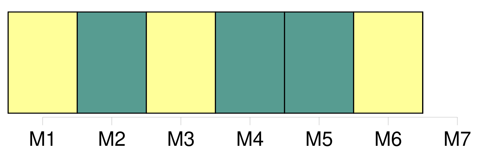
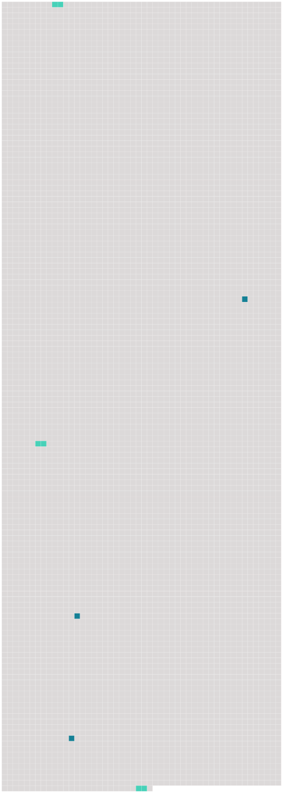

Longueur nb maillons : 6 mentions |
 |
Mais toutes nos forces nous tiraient du côté de [la terre] [90 phrases] On essaie de descendre à [terre] : les forçats avec leurs gros boulets empierrent les rues, arrosent des arbres de cinquante centimètres. [47 phrases] Sur les planches de [la terre] tout est lié à des objets résistants assez fidèles pour qu'on ne regrette pas d'avoir appris à l'école la géométrie dans l'espace et la mécanique des solides. [52 phrases] Les routes de [terre] et de mer ont une faible densité d'habitants et ceux qui vivent sur elles ne sont pas gens à prescrire et à défendre tel ou tel mouvement. [37 phrases] Blair ne descend même pas à [terre] pour contempler les paysages : il a fait vingt-cinq ou trente fois escale à Massaouah et il ne cherche pas à savoir que c'est la plus belle baie du monde avec son cirque de montagnes, ses eaux jaunes et plates qui traînent des rivières de sable jaune, des amas d'herbes comme l'Amazone, et les débris de cet arbre que j'appelle le Flamboyant. [13 phrases] Aden est la plus belle ville et la plus agréable de toute l'Arabie : elle est fermée de murailles du côté de la mer et de montagnes du côté de [la terre] |
 |
Il est possible de télécharger la ressource sur la page Ortolang |
Si vous avez des questions ou vous voyez des erreurs, merci d'envoyer un mail à silvia.federzoni89@gmail.com |